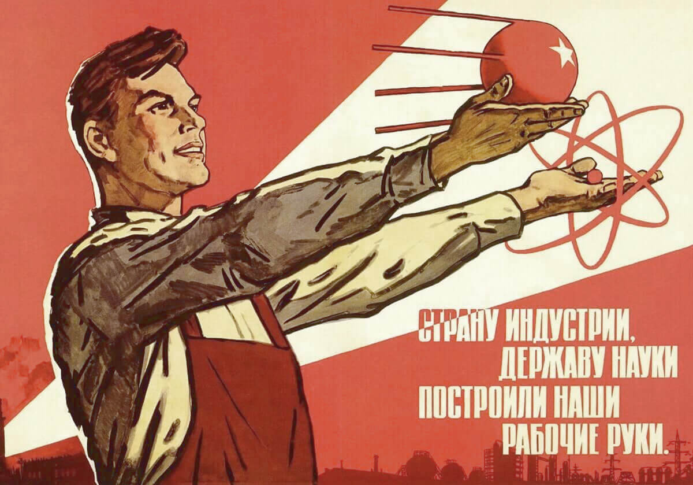

Код, как наследие
Игорь Стариков
Что такое legacy
Стереотипы
- Enterprise — кровавый
- Legacy — жуткое
Legacy это?..
- старый, запутанный, хрупкий код
- покинутый всеми проект
Definition
-
Something transmitted by or received from an ancestor
or predecessor or from the past
Meriam-Webster -
A result of event in the past
Cambridge
Наследие
То, что досталось нам из прошлого
Наследие пугает
- неизвестно, что ожидать
- муторно, запутано, затянется
- придётся мириться
Что может быть не так
- недостаток информации на разных уровнях
- неподходящие инструменты — язык, библиотеки, и пр.
- сложности с кодом — от проектирования до оформления
- неудовлетворительная производительность
Решения есть
- изменить своё отношение к наследию
- вести себя, как с любым незнакомым кодом
Стратегия
- понять проект: какую задачу и как решает
- определить уровень проблемности и сложности
-
выбрать путь:[почти] не трогать; всё переписать; развивать
- обеспечивать «прозрачность» вашей работы
- рассчитать свои силы заблаговременно
Тактика
Инструментарий
- система контроля версий
- среда разработки
- трекер задач
- средства мониторинга событий
- средства проверки качества кода
- непрерывная интеграция, средства автоматизации
Работа с кодом. Подготовка
- покрывать тестами
- аннотировать типами
- добавлять строки документации, комментарии
- использовать запись в журнал
- дополнять события для мониторинга
Работа с кодом. Изменения
- изменять код мелкими порциями, постепенно

Работа с кодом. Изменения
- изменять код мелкими порциями, постепенно
- уменьшать сложность, помнить про «мёртвый» код
- устранять технический долг
- использовать новую функциональность языка
- избавляться от «копировать—вставить»
Диагностика
Трассировка стека
Traceback (most recent call last):
File "/here/src/toolbox/tasks.py", line 113, in func_action_wrapper
result = func_action(**action_kwargs)
File "/here/src/tasks.py", line 79, in startrek_sync_record
Record.batch_startrek_sync()
File "/here/src/models/aux_shared.py", line 157, in batch_startrek_sync
synced = issue.sync()
File "/here/src/toolbox/startrek.py", line 119, in sync
issue = self._client.issue_get(
File "/here/src/integration/startrek.py", line 76, in issue_get
return self._request(f'/issues/{issue}')
File "/here/src/integration/startrek.py", line 61, in _request
raise HttpIntegrationError(response, message=str('\'.join(response.json()['errorMessages'])))
mdh.core.exceptions.HttpIntegrationError: Internal error
Запись журнала
2021-07-16 08:20:02,531 - PRC_491 ERROR bcl.banks.common.statement_downloader:
IngNlStatementDownloader no statements found on 2021-07-16 00:00:00
Подход
- восстановить картину события, контекст:
КЧП — когда, что, почему - произвести поиск в коде
- воспроизвести событие
- определиться с дальнейшими действиями
Потомкам — достойное наследие!

Материалы
Вопросы?
idlesign
idlesign
Эти слайды можно найти тут — bit.ly/ist_012